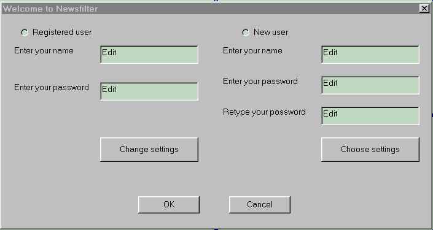

Demo-version of Newsfilter Client User Interface
This is a set of dummy pages of the future Newsfilter Client. Please, try clicking some buttons and send us your comments.

If you are a registered user, you are to select "Registered User" in the top-left form corner, enter your name and password. If you wish, a change of your settings is available after pressing the proper button. If you are satisfied with your settings, press ok.
If you are not a registered user, you have to fill in your name, password, confirm your password, and choose your favorits on the right form side.
Press ok to start working with Newsfilter Client; press Cancel to quit.